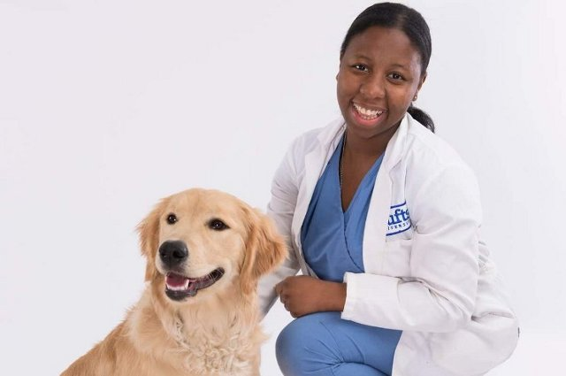

Our Team
|  | Terry - VeterinarianThis is Terry, she is our veterinarian and will be responsible for taking care of your animal. She received her degree in 2004 and has been working with us since 2012. Terry has been in charge of our team since she started working here, making sure that all procedures are done correctly and that proper care is given for each animal. She loves animals of all kinds and always does her best to ensure any animal brought to her gets the best possible treatment. |
Cathy - TechnicianCathy is in charge of assisting the veterinarian with complex, technological procedures such as surgery, radiography, anesthesiology, and more. She received her degree in 2013 and has been working with us since then. Her love for animals is always made abundantly clear when watching her work. |
|
Caitlin - ManagerCaitlin is the manager, she is in charge of our day-to-day operations and keeps us running. She helps out where she has to and makes sure that we are always ready and prepared to get straight to work on patients as soon as they are brought in. She completed her business degree in 2010 at the University of British Columbia and started working for us in 2016. |
|
Dave - Veterinarian's AssistantDave, here, is responsible for assisting Dr. Terry and Cathy as they work to heal and care for our patients. He does a lot of different tasks but his main ones involve restraining and handling animals, as well as feed and exercising them. He has completed multiple training programs and has been working under Dr. Terry long enough to be considered one of the most knowledgeable on our staff. He started working for us in 2013 and has been an integral part of the team ever since. |
|
Jennifer - ReceptionistOur star receptionist Jennifer will handle all calls and ensures that those in need of our care receive our attention and help. She can answer any questions you may have about our clinic and is always available to get in touch with regarding appointments or our services. |